Training & adoption guide
ERP Roles, Permissions & User Manual
A practical, plain-language guide for every user—with detailed Operations and Finance workflows, hand-offs, and real screen examples.
Welcome to the ERP
This manual explains what each role can see, what each role can do, and where work passes from one team to another.
The ERP is designed around job responsibility. Your menu is intentionally different from another user’s menu. Seeing fewer screens is a security feature—not missing functionality.
Your access is the combination of your active role, selected company and plant, action permissions, and the current status of the record.
How to use this guide
- New users: read pages 3–5, then go to your role section.
- Operations: use sections 4–6 for daily work and Finance hand-offs.
- Finance: use sections 7–9 for approvals, posting, reconciliation and review.
- Administrators: use sections 12–14 before creating users or custom roles.
- Auditors and managers: use the complete access and action appendices.
Contents
The pictures were captured from the local seeded training environment. Counts and records will differ in UAT or production, but access behavior and screen layout are the same.
Sign in and choose where you work
Every protected task begins with a named account and an authorised company/plant selection.
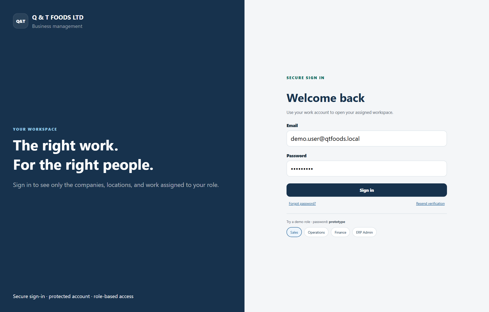
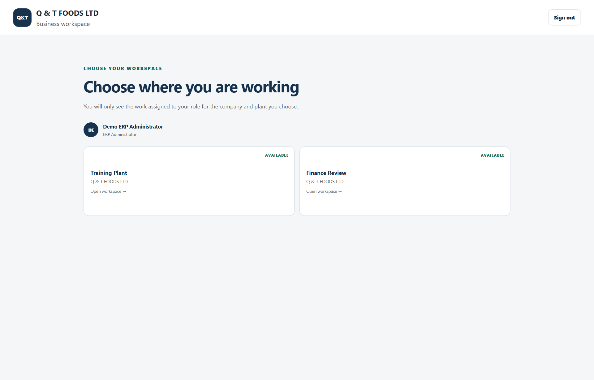
Stock, transactions, approvals and reports are filtered to the selected company and plant.
Select the company/plant control in the top bar. Finish or save any draft before switching.
Never share an account. Open My account to set up two-step verification, review recovery codes and revoke an unfamiliar device session.
Why two people see different things
The system applies several controls together. A visible button is not the only security boundary; the API repeats every check.
View does not mean edit
A Finance Manager can view Production Costs but cannot calculate them. An Operations Manager can view Maintenance and create work; Finance can complete the accounting hand-off.
Multiple roles combine
If a user has two valid assignments in the same workplace, their effective permissions are combined. Use this sparingly and review the resulting segregation of duties.
Partner access is narrower
A Partner User needs both the Partner role and explicit tenant entitlements. They never inherit internal approvals.
When access is working correctly
- The sidebar contains only assigned business screens.
- Unauthorised direct links return the user to safe work.
- Protected APIs return “forbidden” even if someone constructs a request manually.
- Buttons appear only for valid permissions and record states.
When to contact an administrator
- Your company or plant is missing.
- Your role has expired or is inactive.
- A required screen is absent for an approved job duty.
- A colleague left and their assignments or sessions must be revoked.
Standard roles at a glance
Counts below are the current seeded baseline. Custom roles may contain a smaller, approved combination.
Owns enquiries, pricing, sales orders, dispatch, claims and customer collection work.
Owns procurement execution, inventory, planning, production, quality, packing and logistics.
Owns approval, payables, receivables, accounting, payroll, reporting and finance controls.
Configures the organisation, users, roles, policies and integrations; supports all workflows.
Reads only entitled commercial records and exchanges documents or claims in one party tenant.
| Role | Primary responsibility | Important boundaries | Typical hand-off |
|---|---|---|---|
| Sales Manager | Customer opportunity through delivery, claims and collections. | No administration, procurement, production or general-ledger access. | Confirmed demand to Operations; credit/financial exceptions to Finance. |
| Operations Manager | Materials and physical flow from supplier through factory and dispatch. | No user/role administration, sales-order creation, payables payment or general-ledger posting. | Approved purchasing evidence and completed physical movements to Finance. |
| Finance Manager | Commercial approval and financial recognition, payment, reconciliation and reporting. | No user/role administration, production execution or sales-order creation. | Approval or posting result back to Operations and Sales. |
| ERP Administrator | Secure platform and business-control configuration. | Permission does not bypass maker-checker, workflow status, scope or data validation. | Enable users and controls; investigate access or integration issues. |
| Partner User | Self-service access for one explicitly entitled customer/partner tenant. | No internal menu or approval; cannot see another party’s records. | Claims/documents to the internal owner; receipt acknowledgement only. |
Do not give ERP Administrator merely to solve a missing menu item. Correct the workplace assignment or create a focused custom role.
Operations and Finance start differently
The same “My work” design is used, while each sidebar contains only the screens assigned to that role.
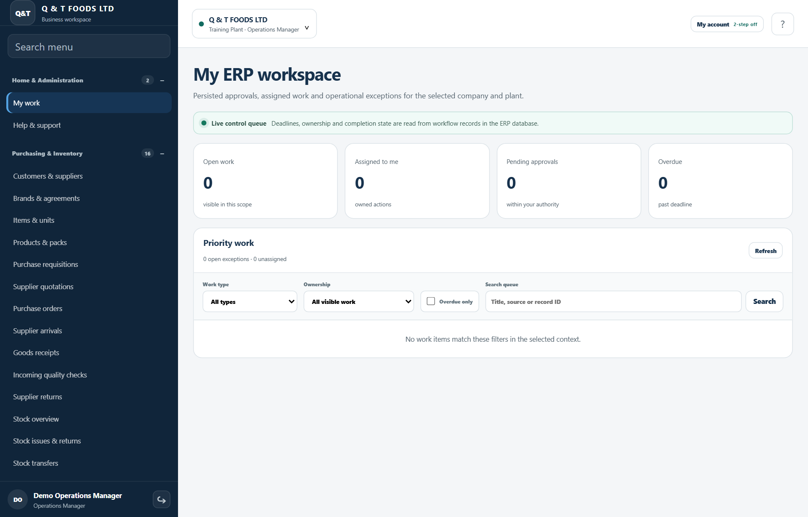
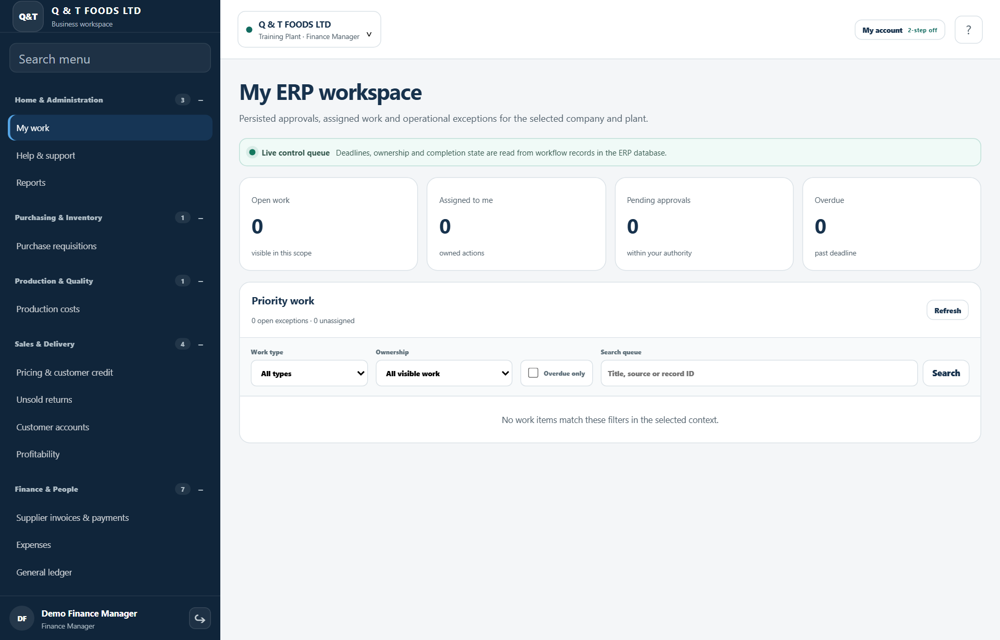
Roles & access, user administration, Sales Orders, General Ledger or supplier payment actions.
Roles & access, user administration, Sales Orders, stock operations or production execution.
Your role: control physical operations
Operations has broad factory and supply-chain access, but it does not include finance posting, sales-order ownership or security administration.
What you own
- Supplier sourcing, orders, arrivals, receipt and rejected returns.
- Stock ownership, lots, reservations, issues, transfers, counts and disposal.
- Demand, material requirements, capacity schedules and production orders.
- Production stages, yield/loss/rework, lab checks and food-safety controls.
- Artwork, packing, finished goods, traceability, recalls and batch cost calculation.
- Picking, loading, delivery confirmation, physical returns and maintenance work.
Record the physical event when it happens. Accurate lot, quantity, location and status data is what Finance later relies on.
Your 42 screens
Home
My work · Help & support
Purchasing & inventory
Customers & suppliers · Brands & agreements · Items & units · Products & packs · Purchase requisitions · Supplier quotations · Purchase orders · Supplier arrivals · Goods receipts · Incoming quality checks · Supplier returns · Stock overview · Stock issues & returns · Stock transfers · Stock counts · Expiry & disposal
Production & quality
Recipes & materials · Production steps · Quality standards · Demand planning · Material planning · Production schedule · Production orders · Production stages · Yield, loss & rework · Lab testing · Food safety · Labels & coding · Packing · Finished goods · Traceability & recalls · Production costs
Delivery and shared work
Order picking · Loading & dispatch · Delivery confirmation · Returns & claims · Unsold returns · Equipment maintenance · Multi-plant operations · Planning recommendations
What you do not receive
User/role administration, approval-policy setup, customer sales-order creation, supplier payment, general-ledger posting, payroll posting, finance imports or financial-report execution. Send those tasks to the authorised owner.
A dependable daily routine
Use “My work” as the starting point; use registers to investigate and complete the underlying record.
Confirm the workplace
Check the company, plant and “Operations Manager” label in the top bar before entering any quantity or making a status change.
Review My work
Check open, assigned, pending and overdue items. Claim work when ownership is required; open the source record before deciding.
Clear physical exceptions first
Prioritise held stock, incoming-quality decisions, shortages, production holds, overdue stages, loading problems and safety alerts.
Process planned work
Continue approved purchasing, stock movements, released schedules, production, quality and dispatch in their expected sequence.
Complete evidence
Use meaningful reasons, references and attachments. Never use a status change merely to remove an item from the queue.
Hand off and reconcile
Confirm that posted quantities and completed records are visible to Finance. Escalate discrepancies instead of creating compensating data.
Recheck the selected plant, lot, owner, location, quantity, unit, effective recipe/route, reason and supporting reference. These actions create accountable history and may affect stock or downstream finance.
Purchase-to-receipt workflow
Operations creates and executes the request; Finance independently approves the requisition and later owns invoice/payment controls.
Operations checklist
- Use the correct supplier, item, quantity and unit.
- Do not source an unapproved requisition.
- Capture all quote terms before award.
- Receive only against an issued purchase order.
- Record lot and held location accurately.
- Return only rejected, available stock to the supplier.
Stop and investigate when
- Estimate, quote and order do not agree.
- Received quantity exceeds remaining order quantity.
- The lot, owner or unit is unclear.
- Accepted plus rejected does not equal inspected quantity.
- A version conflict says someone changed the record.
- Finance reports a match exception.
| Screen | Operations actions | Result / next owner |
|---|---|---|
| Purchase requisitions | Create, edit, submit, cancel | Finance approval queue |
| Supplier quotations | Create, edit, issue, record quotes, award, cancel | Awarded source for purchase order |
| Purchase orders | Create, amend, issue, cancel | Issued commitment for arrival/receipt |
| Supplier arrivals / Goods receipts | Create, update, post or cancel | Received lot in Quality Hold |
| Incoming quality / Supplier returns | Complete inspection; create/update/post/cancel rejected return | Released stock or controlled supplier return; accepted receipt available to Finance |
Same requisition, different responsibility
The interface exposes actions by role. The same screen can therefore support a controlled hand-off.
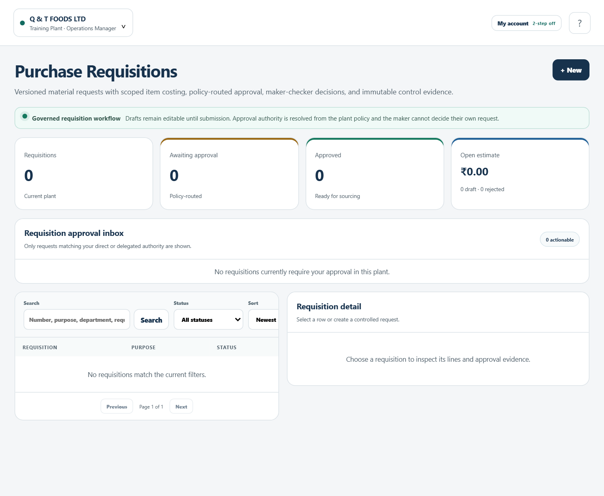
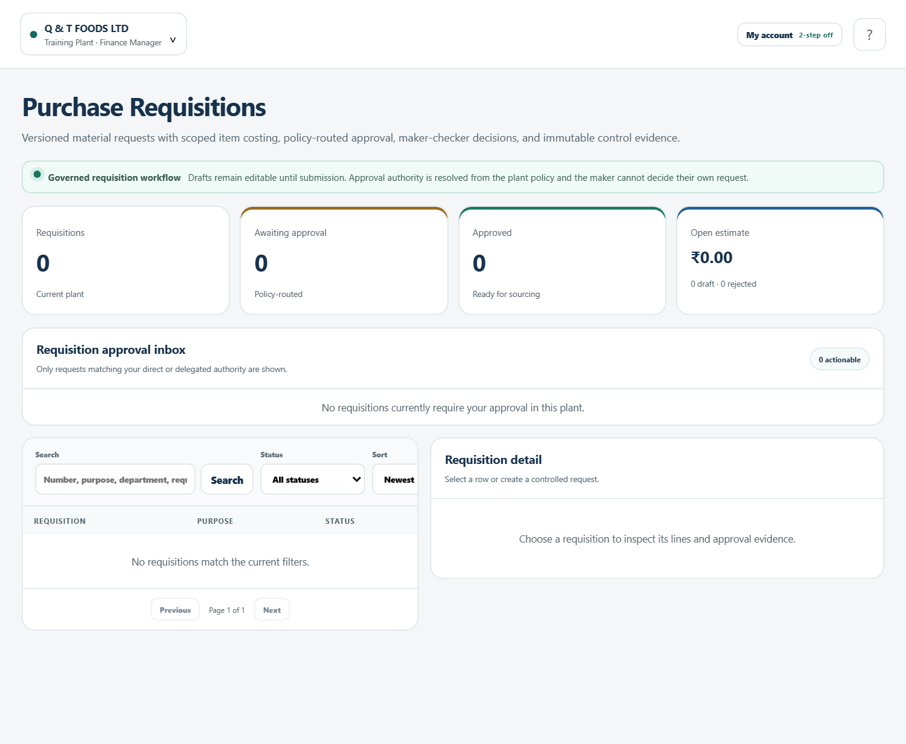
Operations explains the business need and supplies accurate lines and estimated value.
Finance examines policy, amount, supporting evidence and maker-checker separation before deciding.
The request must be in the correct status, within authority, unchanged, and created by another person where maker-checker applies.
Inventory and inbound control
Inventory is a ledger of accountable movements—not a number to overwrite. Always use the operation that describes what physically happened.
Stock overview
Review physical, reserved, blocked and available quantities by item, owner, lot, location, quality and expiry.
Actions: manage owners/lots; reserve and release.
Issues & returns
Use for authorised consumption or return of stock when the movement is not already created by a dedicated workflow.
Actions: create, edit, post, cancel.
Stock transfers
Move stock between controlled plant locations while preserving owner, lot, quality and movement evidence.
Actions: create, edit, post, cancel.
Stock counts
Record the counted quantity and reason. Posting creates the controlled adjustment; it does not rewrite history.
Actions: create, edit, post, cancel.
Expiry & disposal
Identify expiring stock and dispose only through the governed record with reason and outcome location.
Actions: create, edit, post, cancel.
Incoming quality
Split the inspected held quantity into accepted and rejected quantities. The total must reconcile exactly.
Action: complete inspection.
If the wrong item, unit, lot, owner, location or quality status was posted, stop and follow the approved correction/reversal process. Preserve the original audit trail.
Before posting a movement
- Correct workplace and location
- Correct item/SKU and unit
- Correct owner and lot
- Enough available quantity
- Reason and source reference entered
After posting
- Confirm the movement number/status
- Check resulting stock availability
- Confirm linked source record
- Resolve any work-queue exception
- Notify the next owner when required
Plan and execute production
Planning creates controlled snapshots; execution consumes the released plan and records actual material, time, output and quality.
Release gates
- An effective recipe and active production route exist.
- Material shortages and capacity overloads are resolved.
- Reserved material is available by lot and expiry.
- Stages are completed in route order.
- Good + loss + unresolved rework reconciles to actual output.
- Required lab results and food-safety holds are clear.
What the system preserves
- Recipe, material and route snapshot used by the order.
- Exact reservations and stock issues.
- Stage timestamps and actual duration.
- Yield, loss, rework and resolution history.
- Specification results, deviations and holds.
- Finished-lot genealogy, coding and cost evidence.
Cancelling a released schedule or order can return reservations, but only while downstream execution allows it. Read the displayed reason when cancellation is blocked.
From released schedule to production order
Both screens belong to Operations, but they represent different control points: commitment of capacity/material and accountable batch execution.
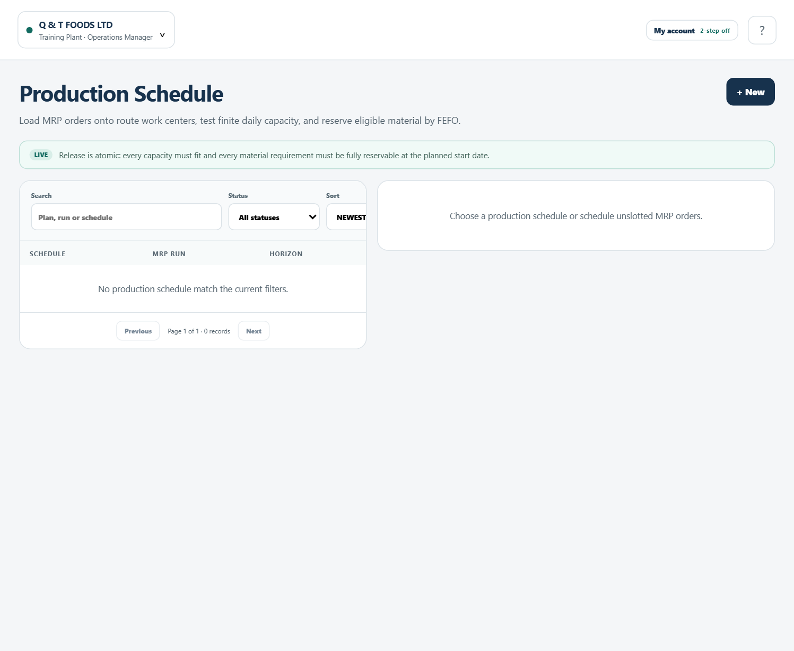
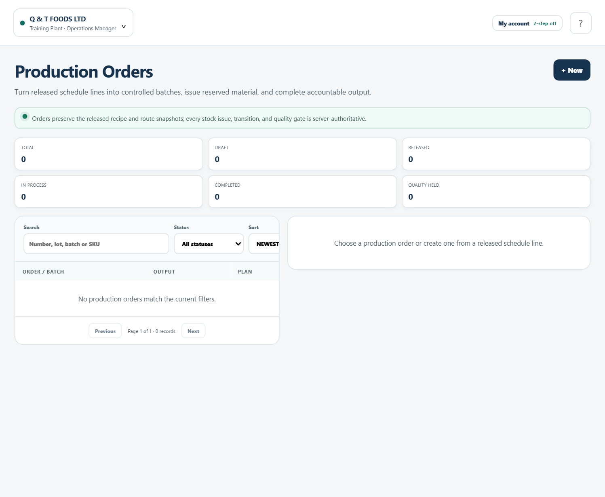
It uses route capacity and FEFO material availability before release.
It records batch material, stages, quality, yield and completion evidence.
Quality, packing, traceability and cost
These controls make every finished lot explainable from incoming material through release, customer exposure and actual cost.
| Area | What Operations does | Key rule | Result |
|---|---|---|---|
| Quality standards | Create, edit and lifecycle-manage typed specifications. | Use effective standards with valid limits and test methods. | Controlled acceptance criteria. |
| Lab testing | Create samples and complete parameter results. | Failed values can create a deviation automatically. | Pass/fail evidence linked to the batch. |
| Food safety | Create/release holds, resolve deviations and release eligible batches. | No release while blocking quality evidence remains. | Explicit disposition and release history. |
| Labels & coding | Create/update revisions, approve effective artwork, retire superseded versions. | Packing must use an approved, effective revision. | Traceable product coding. |
| Packing | Create, complete or cancel packing runs. | Only quality-released output can become finished stock. | Finished lot and stock receipt. |
| Traceability & recalls | Create and close recall cases; explore genealogy both directions. | Open recalls block connected on-hand stock. | Customer exposure and containment evidence. |
| Production costs | Calculate immutable material/conversion/yield and variance snapshots. | Calculate only from complete accountable actuals. | Batch cost available to Finance and profitability. |
Before batch release
Check completed stages, reconciled output, required tests, deviations, food-safety holds, and approval evidence.
Before packing
Check released batch quantity, product/SKU, approved artwork revision, barcode and rendered lot/date code.
Before cost calculation
Check material issues, stage actuals, good quantity, losses, rework resolution and configured cost inputs.
This preserves Operations ownership of production actuals while allowing independent financial review.
Your role: approve and account
Finance sees 24 focused screens. It can review selected operational evidence, but cannot execute production or administer system access.
What you own
- Purchase-requisition approval within direct/delegated authority.
- Customer credit controls and receivable collection allocation.
- Supplier-invoice matching, invoice/proposal approval, payment and bank reconciliation.
- Expenses, journals, periods, overhead allocation, assets and payroll posting.
- Financial scenarios, adjustments, historical imports, archive, openings and diagnostics.
- Controlled reporting, multi-company consolidation and planning-review decisions.
Do not treat operational completion as financial proof by itself. Match the source, quantities, price, tax, approval and accounting period.
Your 24 screens
Home & review
My work · Help & support · Reports · Purchase requisitions · Production costs
Commercial & returns
Pricing & customer credit · Unsold returns · Customer accounts · Profitability
Finance & people
Supplier invoices & payments · Expenses · General ledger · Overhead costs · Fixed assets · Employees & payroll · Equipment maintenance
Scale & finance tools
Multi-plant operations · Planning recommendations · Financial scenarios · Finance adjustments · Historical data import · Bill archive · Opening balances · Finance review tools
What you do not receive
User/role administration, purchasing execution after requisition approval, physical inventory posting, production execution, quality release, packing, dispatch or sales-order creation. Review their evidence; do not perform their jobs through Finance access.
A dependable daily routine
Start with approvals and exceptions, then move through matching, posting, reconciliation and review.
Confirm scope
Verify company, plant and Finance Manager in the top bar. A report or journal in the wrong scope is not a harmless mistake.
Review My work
Open approval and exception items from their source. Claim only when ownership is required and leave a decision reason.
Resolve matches
Compare invoice lines to purchase order, QC-accepted receipt quantity, price and tax before approving.
Post controlled entries
Confirm maker-checker separation, balanced lines, open period, correct accounts and immutable source evidence.
Reconcile
Allocate receipts/payments exactly, use unique bank references, and investigate unallocated or unmatched amounts.
Review and report
Run controlled reports with an explicit cutoff. Use the stored snapshot/export rather than rebuilding totals manually.
Approval questions
- Is the request from another user?
- Is it within direct or delegated authority?
- Is the purpose complete and supported?
- Do value, supplier/customer and terms make sense?
- Is the source version unchanged?
- Is a rejection reason specific enough to correct?
End-of-day questions
- Any approved but unposted items?
- Any payment or receipt not reconciled?
- Any journal draft or imbalance?
- Any nearing period-close dependency?
- Any failed export or unacknowledged file?
- Any overdue Finance work item?
If evidence is incomplete, reject or return it with a useful reason. Approval is an accountable control, not a queue-clearing action.
Supplier invoices, proposals and payment
The payable workflow links financial settlement to an issued order and QC-accepted receipt evidence.
Invoice actions
Create · Update · Match · Approve · Cancel
The same user must not make and approve the controlled item where maker-checker applies.
Proposal/payment actions
Create proposal · Update · Approve · Cancel · Pay · Reconcile
One proposal is limited to one supplier; payment cannot exceed approved outstanding value.
Bank & statutory actions
Manage masked bank setup · Generate controlled export · Record acknowledgement
Exports are deterministic, checksummed and single-use against their selected sources.
Typical match exception
Invoice quantity exceeds QC-accepted, uninvoiced quantity; invoice price differs from the purchase order; source/term is missing; or tax data is invalid.
Correct the supplier invoice when it is wrong. If the order or physical receipt is wrong, return the issue to its source owner and preserve the history.
Payables and the general ledger
Payables governs supplier settlement; the ledger governs balanced accounting entries and periods.
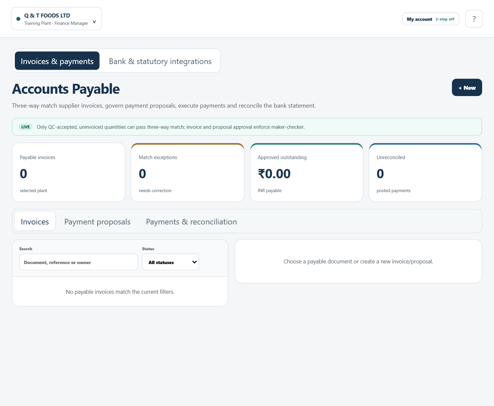
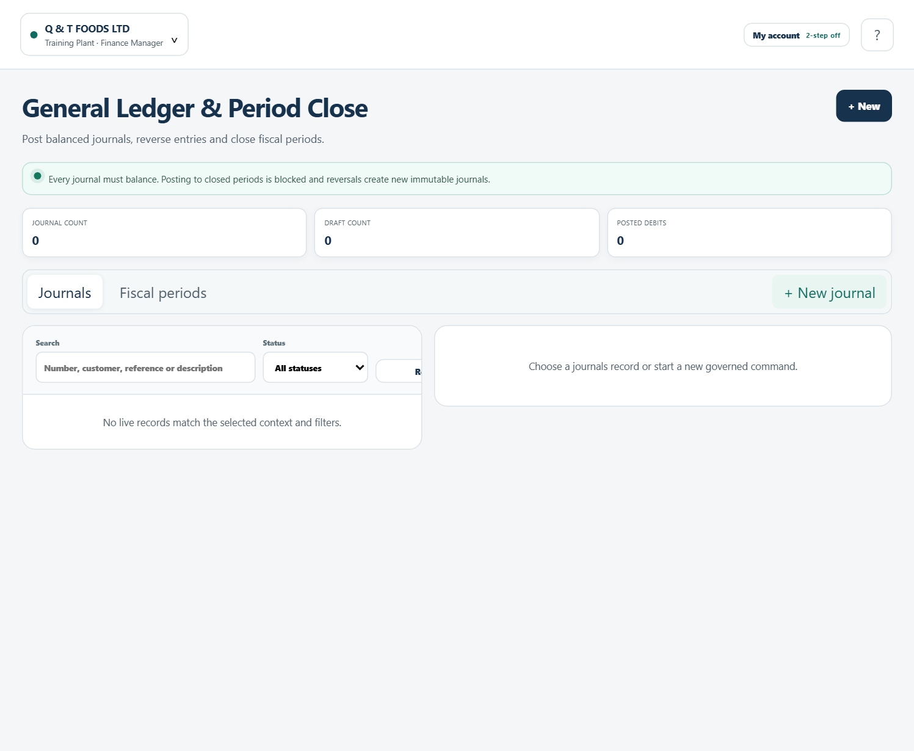
Use the purchase order, accepted receipt, tax and bank evidence.
Use balanced accounts, an open period, reasoned references and reversal—not deletion.
Accounting and finance controls
Choose the screen that describes the business event. Each workspace has its own posting and evidence rules.
| Workspace | Finance can | Control to remember |
|---|---|---|
| Pricing & customer credit | Set controlled credit decision/terms. | Sales owns price-list lifecycle; Finance owns customer credit. |
| Customer accounts | Record and allocate collections. | Do not over-allocate; preserve transaction history. |
| Expenses | Create, edit, submit, approve, post, cancel. | Maker-checker and valid tax/account/period. |
| General ledger | Create/post/reverse journals; close periods. | Balanced debits/credits; reverse instead of deleting. |
| Overhead costs | Create/update pools and allocate. | Use approved basis and balanced target journal. |
| Fixed assets | Create/update, activate, depreciate, dispose. | Correct dates, useful life, accounts and net book value. |
| Employees & payroll | Create/update accounting profiles; create, approve and post payroll. | Immutable run snapshot and independent approval. |
| Financial scenarios | Create and run simulations. | Simulation is ledger-isolated and never posts live entries. |
| Finance adjustments | Create, submit, approve, post, cancel. | Balanced maker-checker adjustment with a reason. |
| Historical data import | Create, map/validate and post batches. | Resolve every mapping and validation exception first. |
| Bill archive | Upload and download retained documents. | Private access, supported type/size, checksum and retention. |
| Opening balances | Create, reconcile and post. | Lines and control total must reconcile exactly. |
| Finance review tools | Create snapshot, diagnose and close a review. | Diagnostics preserve a snapshot; they do not rewrite ledger history. |
| Reports | Run and export controlled snapshots. | Choose the cutoff and retain checksum/freshness evidence. |
Who does what in shared workflows
Shared visibility supports review; it does not erase ownership. The letter in each cell describes the expected responsibility.
| Process / control point | Operations | Finance | Required hand-off evidence |
|---|---|---|---|
| Purchase requisition preparation | D | R | Purpose, lines, need-by date, estimate and source context. |
| Purchase requisition decision | — | A | Authority/policy snapshot and reasoned decision. |
| RFQ, award and purchase order | D | R through source evidence | Supplier quotes, ranking, award reason, order/revisions. |
| Arrival, receipt and incoming quality | D | R | Issued order, lot, received and accepted/rejected quantities. |
| Supplier invoice, proposal and payment | R / correct source | D + A by separate users | Three-way match, tax, approval, bank reference and allocation. |
| Production actuals and batch cost | D | R | Material issues, time, yield/loss and immutable cost snapshot. |
| Unsold return—physical receipt/disposition | D | R | Customer/shipment/invoice, returned quantity, quality outcome. |
| Unsold return—approval/loss/financial resolution | R | A / D | Policy decision, loss value, tax and receivable/refund/replacement evidence. |
| Equipment maintenance | D create/release | D complete cost | Asset, work performed, labour/material/external cost and expense account. |
| Inter-plant movement | D transfer | D consolidate | Route/mapping, dispatch/receipt, exchange rate and elimination evidence. |
| Planning recommendation | D prepare | A review | Immutable input checksum, limitations, recommendation and outcome. |
Giving one person both roles does not guarantee they may approve their own record; workflow rules still compare the actor who made the record with the actor making the decision.
Unsold return: physical outcome and finance outcome
Both roles open the same case, but their available commands represent different stages of the lifecycle.
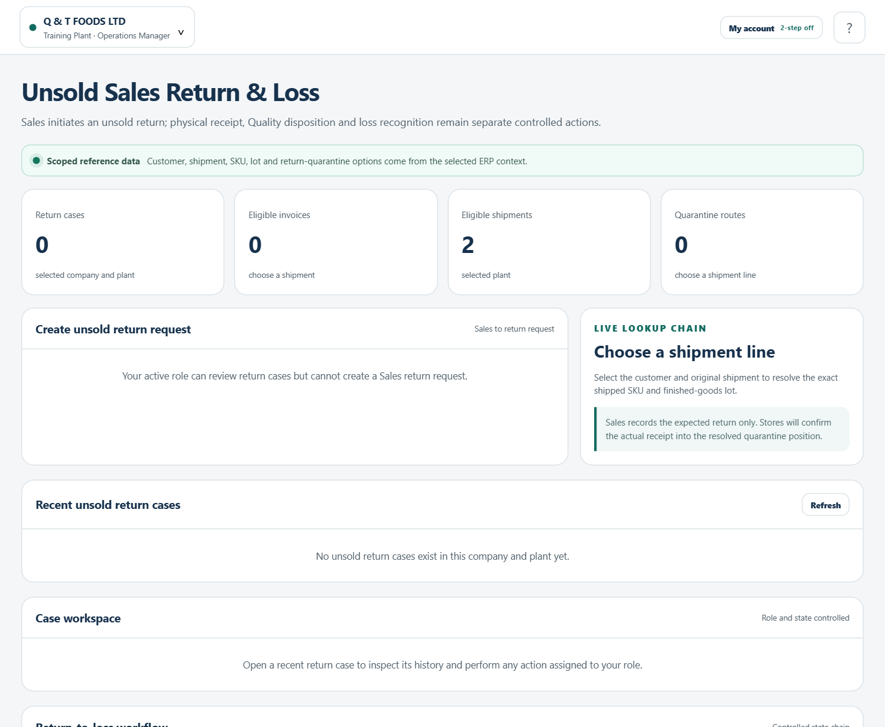
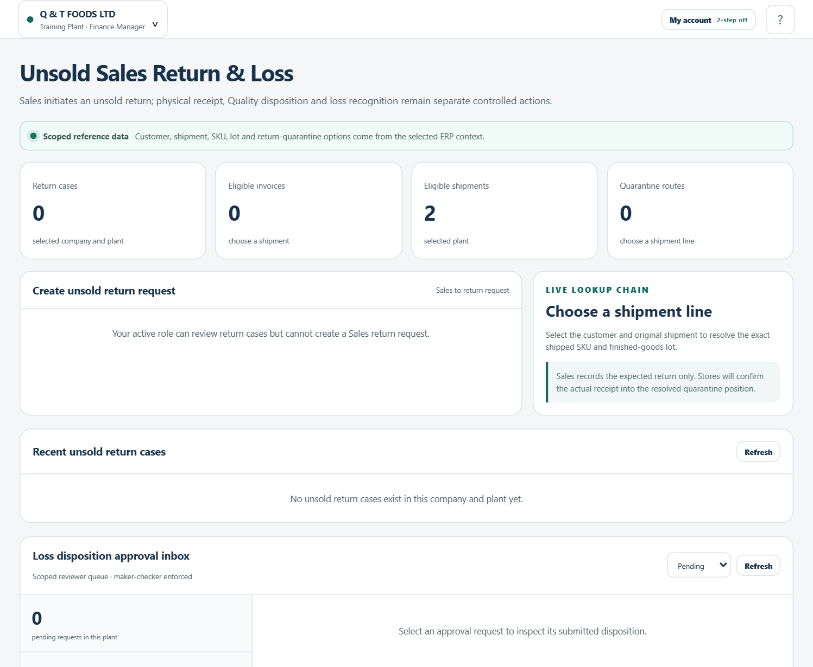
Returned quantity and condition must reconcile to the shipment and inventory outcome.
Invoice, net credit, tax and receivable/refund/replacement must reconcile exactly once.
Maintenance: work ownership and cost completion
Shared screen, deliberately different action set.
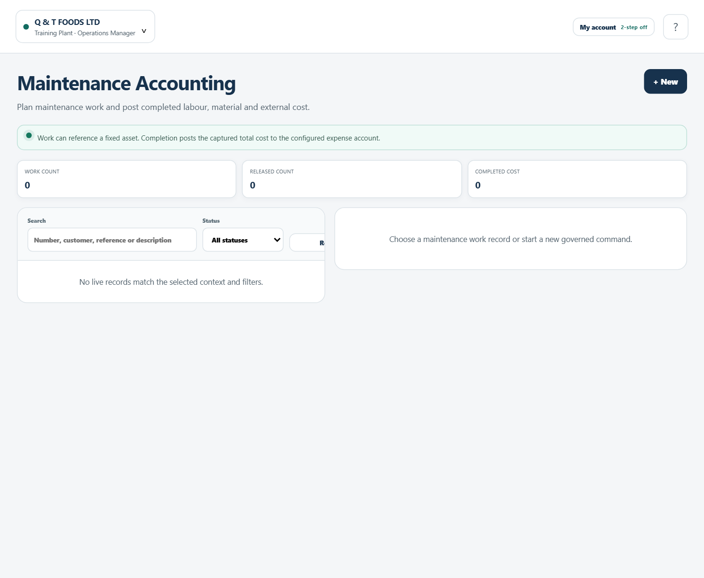
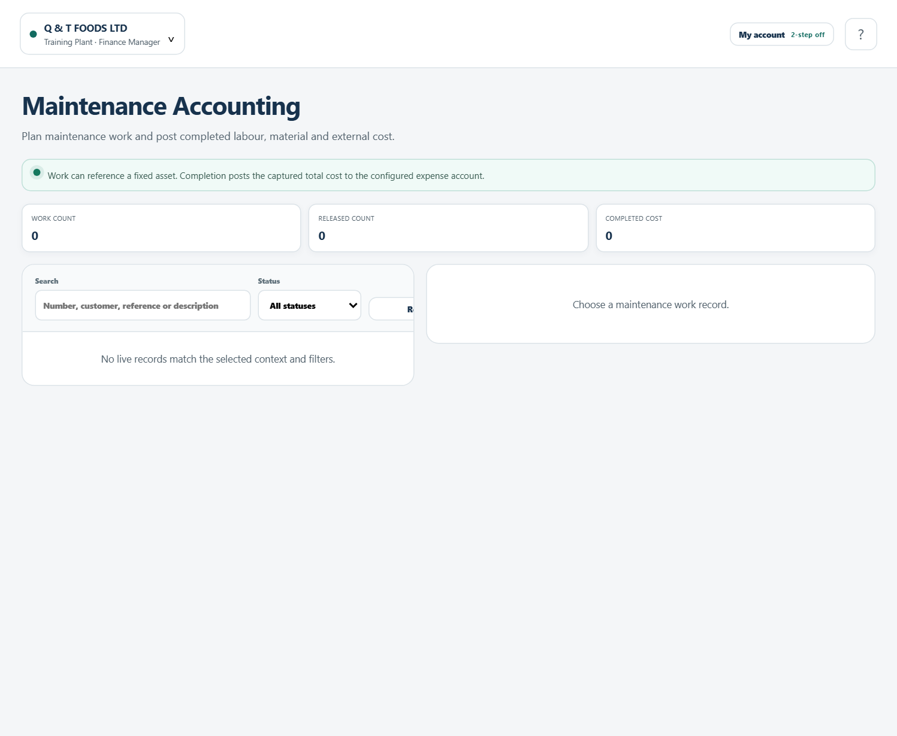
The standard permission model allows Operations to complete maintenance as well as Finance. If the organisation requires Finance-only final completion, create a narrower custom Operations role after business-owner approval.
Multi-plant: move goods, then consolidate
Operations controls physical transfer; Finance controls consolidated financial reporting.
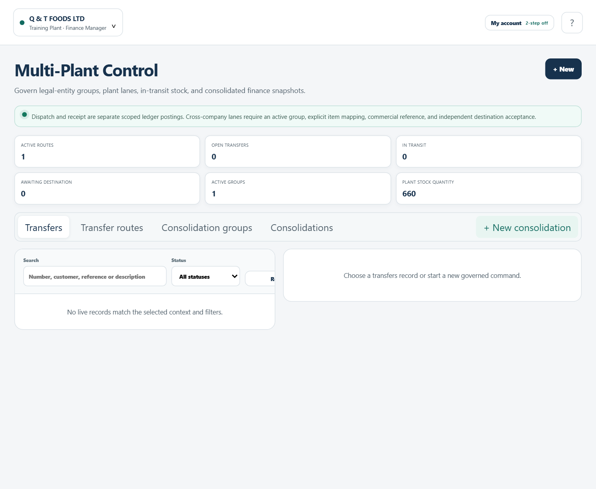
Source/destination, route, item/UOM mapping, dispatch and receipt.
Entity group, exchange rate, elimination lines and balanced totals.
Planning recommendations: prepare, then review
The recommendation engine supports a decision; it never posts stock, purchasing, production or finance transactions.
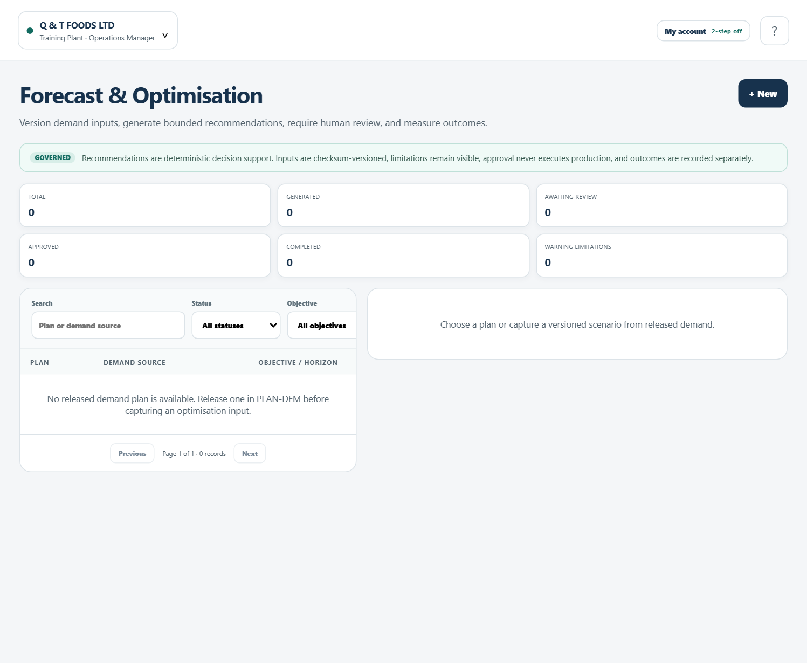
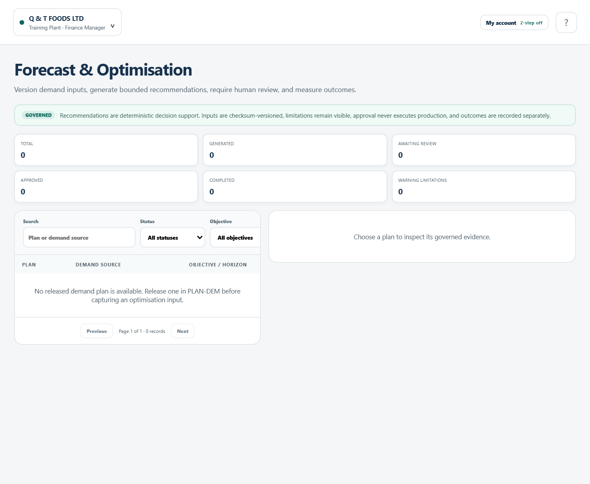
Read the source cutoff, checksum, exclusions and limitations. If the source changed after submission, revise and resubmit instead of approving stale advice.
Commercial roles
Sales operates the internal customer workflow; Partner User sees only explicitly entitled records inside one external tenant.
Sales Manager
13 screens · 38 actions
- Qualify and convert enquiries.
- Manage price lists; Finance owns credit decisions.
- Create, confirm, amend or cancel sales orders.
- Manage contract work, picking, loading, dispatch and delivery.
- Create/resolve claims and create unsold returns.
- Allocate customer collections and view profitability.
Does not see: administration, purchasing, production, payables or ledger screens.
Partner User
1 screen · 4 actions
- Read entitled orders, shipments, invoices and claims.
- Create a claim against an entitled shipment.
- Upload and download entitled documents.
- Acknowledge document receipt.
Does not receive: any internal screen, another customer’s record, implicit document access or internal approval authority.
It never approves an invoice, credit, return or any internal workflow.
Internal sales vs external partner
The Partner User receives a deliberately minimal navigation and record-entitlement boundary.
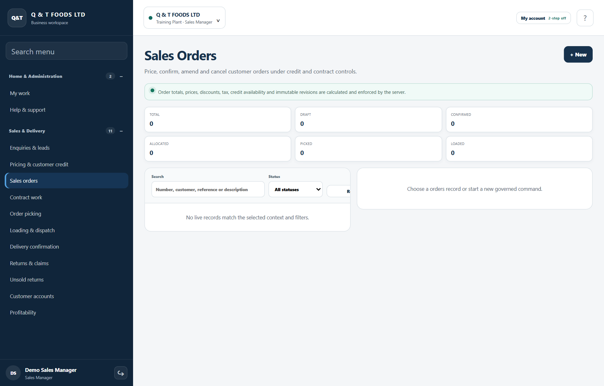
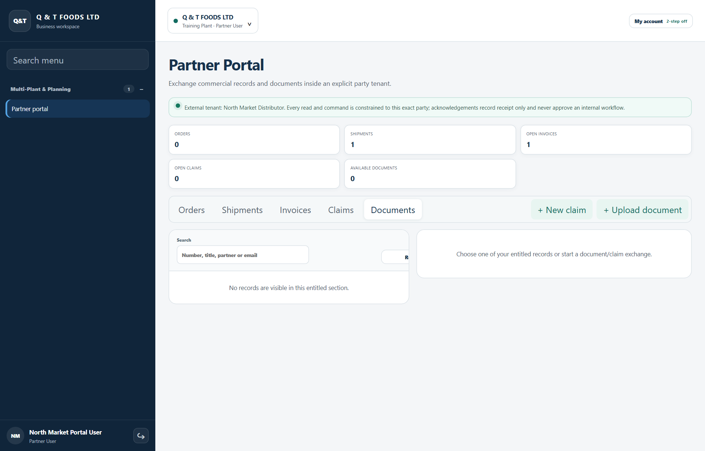
Screen and action permissions plus company/plant scope.
Partner role plus party tenant plus explicit record/document entitlements.
Administer access without weakening controls
Administrator is a configuration and support role. It has broad internal screen/action authority, but workflow and data rules still apply.
Organisation
Create/update companies, plants and plant location hierarchies.
Identity
Invite/create users, update status, manage role assignments, verification and device sessions.
Authority
Create custom roles/permissions and atomically assign a permission set.
Approval control
Version plant policies, value bands, delegation and escalation.
Evidence & integration
Search audit evidence; process, retry or quarantine integration work.
Business support
See all business workspaces, manage help cases and configure partner access.
Protected system definitions
The five seeded roles and system permissions are immutable in the editor. Their names, status and permission composition cannot be casually rewritten. Create a company-scoped custom role for local differences.
Admin is still constrained
Maker-checker, approval authority, record status, selected context, optimistic version, required evidence and accounting/stock rules continue to run.
Grant it only to named platform/business-control administrators, review it regularly, require two-step verification and keep normal operational work under normal roles.
Users and roles are separate controls
Create the authority definition in Roles & access; assign it to a named user and workplace in Users.
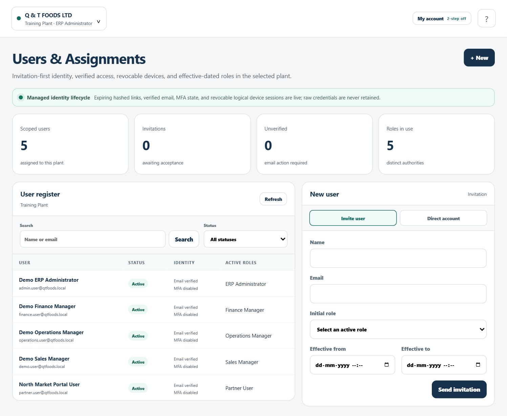
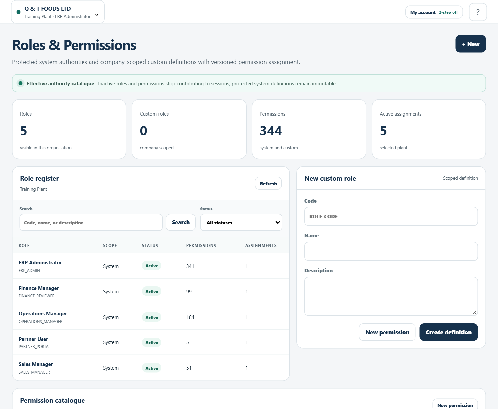
One person, one named identity, verified contact and revocable sessions.
A reusable, approved bundle of view and action permissions.
Create or invite a user
Invitation is the preferred route because the person sets their own secret. Direct account creation is intended for controlled local/UAT use.
Choose the workplace
Select the company and plant where the assignment must apply. User lists and new assignments are scoped here.
Open Users and select + New
Choose Invite user for normal onboarding or Direct account only under the approved procedure.
Enter identity
Use the person’s real name and unique work email. Never create a shared “finance” or “stores” identity.
Choose the least-privilege role
Select the initial role and optional effective-from/to dates. Confirm the role matches the job, not seniority.
Send invitation / create
The user and initial plant assignment are created together. Deliver invitation links only through the approved channel.
Verify access
Ask the user to sign in, choose the intended workplace and confirm their menu. Do not ask them to share their password.
Add exceptional roles carefully
Open the user and add an additional effective-dated role only with owner approval and segregation-of-duties review.
Maintain lifecycle
Deactivate assignments/accounts when duties change; resend/revoke invitations, send verification and revoke device sessions as needed.
After an access change, have the user reselect the workplace or sign out and back in. Verify both the menu and one representative allowed/denied action.
Create a custom role and assign permissions
Use a custom role when a standard role is broader than the approved job. Do not edit a protected system role.
Good custom role
Name: Warehouse Shift Lead
Purpose: Receive, inspect, move and count stock at Training Plant; no purchasing award, production release or finance action.
Design: Only required inventory/inbound screens and their exact commands.
Poor custom role
Name: Manager Access
Purpose: “Needs everything just in case.”
Risk: Excess privilege, unclear ownership and conflicting maker/checker abilities.
Prefer existing system permissions. A new custom permission only has an effect when an implemented backend route or workflow explicitly checks that permission.
| Review before activation | Question | Evidence |
|---|---|---|
| Business ownership | Who approved the job definition? | Named owner and request/reference |
| Least privilege | Can any screen or action be removed? | Task-to-permission mapping |
| Segregation | Can the role make and approve/post the same item? | Tested maker/checker cases |
| Scope | Which company/plant and dates apply? | Assignment record |
| Validation | Were positive and negative tests run? | Test user/screenshots or sign-off |
Permission guardrails
Permissions are powerful, but they are only one layer of the control model.
Screen permission
Allows the menu item and protected read route. Friendly example: View General ledger.
Action permission
Allows a command family. Friendly example: Post journal. It does not bypass status or validation.
Assignment
Binds the role to a user, company and plant, optionally for a fixed date window.
Approval authority
Policy/value bands and delegation decide which submitted records a reviewer may decide.
Record entitlement
Partner users need explicit party-bound entitlement in addition to their role.
Workflow rule
Record status, maker identity, current version, quantity/balance and evidence remain server-authoritative.
Recommended access review
- Monthly: active administrator and Finance assignments.
- Quarterly: all roles, custom roles and partner entitlements.
- Immediately: leaver, transfer, suspected compromise or emergency access.
- Before go-live/change: maker-checker and negative access tests.
Prefer deactivation over deletion
Deactivate an account, assignment, custom role or permission to stop future access while preserving historical attribution and audit evidence.
Protected system definitions cannot be edited or deactivated in the normal editor.
The backend must enforce the corresponding screen/action permission. This ERP does so for current routes; new features must follow the same pattern before release.
Home and administration
A check means the standard seeded role can open the screen in an assigned workplace. Action rights are listed later.
| Business screen | Sales | Operations | Finance | Admin | Partner |
|---|
Operations and Finance cannot open Users or Roles & access and receive HTTP 403 from the corresponding API in the seeded model.
Purchasing and inventory
Finance shares Purchase Requisitions for approval. Operations executes the remaining supply and stock workflows.
| Business screen | Sales | Operations | Finance | Admin | Partner |
|---|
Production and quality
Operations owns master data, planning, execution and quality. Finance receives read access to Production Costs.
| Business screen | Sales | Operations | Finance | Admin | Partner |
|---|
Sales and delivery
Sales owns the complete commercial chain; Operations and Finance join only at their physical or financial hand-off points.
| Business screen | Sales | Operations | Finance | Admin | Partner |
|---|
For example, Sales creates an Unsold Return, Operations receives/disposes it, and Finance approves/posts/completes its financial outcome.
Finance, scale and finance tools
Equipment Maintenance, Multi-plant Operations and Planning Recommendations are shared because they have explicit cross-role hand-offs.
| Business screen | Sales | Operations | Finance | Admin | Partner |
|---|
Sales Manager and Partner User
Actions are written as business verbs. Read access is covered by the screen matrix.
Sales Manager · 38 actions
| Screen | Permitted actions | Boundary |
|---|---|---|
| My work | Claim, complete | Only visible/eligible work. |
| Enquiries & leads | Create, edit, qualify, convert, close | Conversion follows valid customer/product data. |
| Pricing & customer credit | Create, edit, activate, retire price lists | Finance owns credit decisions. |
| Sales orders | Create, edit, confirm, amend, cancel | Server prices/taxes and applies credit/contract controls. |
| Contract work | Create, release, complete, cancel | Must use valid customer commitments. |
| Order picking | Allocate, pick, cancel | FEFO and available stock enforced. |
| Loading & dispatch | Create, load, dispatch, cancel | Dispatch posts stock/receivable evidence. |
| Delivery confirmation | Complete | Record delivered/failed proof. |
| Returns & claims | Create, receive, resolve | Limited to exact shipped quantities. |
| Unsold returns | Create, attach evidence | Operations/Finance own later stages. |
| Customer accounts | Collect | Allocation cannot exceed open balance. |
| Help & support | Create, comment, reopen, close own case | Scoped to requester and authorised support. |
Partner User · 4 actions
| Screen | Permitted actions | Boundary |
|---|---|---|
| Partner portal | Create claim | Only an entitled shipment and available quantity. |
| Partner portal | Upload document | Private, allowed file and exact tenant. |
| Partner portal | Download document | Only explicitly entitled available documents. |
| Partner portal | Acknowledge receipt | Informational only; never internal approval. |
The standard Sales role has the screen but no calculation/posting action there.
Removing one entitlement must remove that record/document even while the Partner role stays active.
Operations Manager — supply and stock
Part 1 of the Operations action catalogue.
| Screen / area | Permitted actions | Practical meaning |
|---|---|---|
| My work | Claim, complete | Take ownership and finish eligible non-approval work. |
| Customers & suppliers | Create, edit, lifecycle | Maintain identity, roles, addresses, tax and terms. |
| Brands & agreements | Create, edit, lifecycle | Maintain effective party agreements. |
| Items & units | Create, edit, lifecycle | Maintain catalogue item and controlled UOM conversion. |
| Products & packs | Create, edit, lifecycle | Maintain stock-bearing products, packs and barcodes. |
| Purchase requisitions | Create, edit, submit, cancel | Prepare need; Finance decides approval. |
| Supplier quotations | Create, edit, issue, record quote, award, cancel | Run governed sourcing and evidence-backed award. |
| Purchase orders | Create, amend, issue, cancel | Control the supplier commitment and revisions. |
| Supplier arrivals | Create, edit, cancel | Record vehicle/arrival against issued order. |
| Goods receipts | Create, edit, post, cancel | Receive partial quantities into Quality Hold. |
| Incoming quality checks | Complete | Split held quantity into accepted/rejected. |
| Supplier returns | Create, edit, post, cancel | Return only QC-rejected, available stock. |
| Stock overview | Create/edit/lifecycle owner; create/edit/lifecycle lot; reserve, release | Control owners, lots and reservations. |
| Stock issues & returns | Create, edit, post, cancel | Post controlled issue/return movement. |
| Stock transfers | Create, edit, post, cancel | Move stock between controlled locations. |
| Stock counts | Create, edit, post, cancel | Post a reasoned count adjustment. |
| Expiry & disposal | Create, edit, post, cancel | Record governed expiry/disposal outcome. |
Operations Manager — make, deliver and improve
Part 2 of the Operations action catalogue.
| Screen / area | Permitted actions | Practical meaning |
|---|---|---|
| Recipes / steps / standards | Create, edit, lifecycle each definition | Maintain effective production and quality master data. |
| Demand planning | Create, edit, release, cancel | Commit demand into material planning. |
| Material planning | Run, cancel | Explode recipe and net available inventory. |
| Production schedule | Create, edit, release, cancel | Commit capacity and reserve FEFO material. |
| Production orders | Create, release, issue, complete, cancel | Control batch and exact material issue/output. |
| Production stages | Start, complete | Record route sequence and actual time. |
| Yield, loss & rework | Record, resolve | Reconcile output and determine rework outcome. |
| Lab testing | Create, complete | Capture results against effective specification. |
| Food safety | Place hold, release hold, resolve deviation, release batch | Control corrective action and batch gate. |
| Labels & coding | Create, edit, approve, retire | Govern effective artwork/coding revision. |
| Packing | Create, complete, cancel | Pack released output and receive finished stock. |
| Traceability & recalls | Create, close | Contain connected stock and preserve closure evidence. |
| Production costs | Calculate | Freeze actual batch cost and variance snapshot. |
| Picking / loading / delivery | Allocate, pick, cancel; create, load, dispatch, cancel; complete POD | Execute physical fulfilment and proof of delivery. |
| Returns & claims | Receive | Record physical returned goods; Sales resolves commercial outcome. |
| Unsold returns | Receive, dispose/accept outcome, attach evidence | Record physical/quality stage before Finance decision. |
| Equipment maintenance | Create, edit, release, complete, cancel | Plan work and capture accountable cost. |
| Multi-plant operations | Create, edit, submit, dispatch, receive, cancel transfer | Control physical inter-plant movement. |
| Planning recommendations | Create, revise, generate, submit, record outcome, complete, cancel | Prepare governed advice; Finance approves/rejects. |
| Help & support | Create, comment, reopen, close own case | Use role-relevant help and requester-owned support. |
The finished-lot record is produced by controlled packing; Operations uses it for traceability rather than free-form editing.
Finance Manager — approvals, payables and accounting
Part 1 of the Finance action catalogue.
| Screen / area | Permitted actions | Practical meaning |
|---|---|---|
| My work | Claim, complete | Own and complete eligible Finance work. |
| Purchase requisitions | Approve/reject within workflow | Use direct/delegated authority and maker-checker. |
| Pricing & customer credit | Credit decision | Control customer limit/hold/terms; Sales owns price-list lifecycle. |
| Customer accounts | Collect | Record and allocate customer receipt. |
| Supplier invoices | Create, edit, match, approve, cancel | Three-way match and independent approval. |
| Payment proposals | Create, edit, approve, cancel | One supplier, eligible approved balances, maker-checker. |
| Payments | Pay, reconcile | Allocate exactly and use a unique bank statement reference. |
| Bank/statutory | Manage bank, export, acknowledge | Masked bank data and checksummed single-use exports. |
| Expenses | Create, edit, submit, approve, post, cancel | Tax/account validation and maker-checker posting. |
| General ledger | Create journal, post, reverse, close period | Balanced lines, open period and immutable reversal trail. |
| Overhead costs | Create, edit, allocate | Controlled allocation basis and balanced journal. |
| Fixed assets | Create, edit, activate, depreciate, dispose | Lifecycle-safe carrying value and posting. |
| Employees & payroll | Create/edit employee profile; create run, approve, post | Immutable run snapshot and independent approval. |
Finance reviews the evidence but the standard role has no batch-cost calculation or profitability mutation action.
Finance Manager — finance tools and shared review
Part 2 of the Finance action catalogue.
| Screen / area | Permitted actions | Practical meaning |
|---|---|---|
| Financial scenarios | Create, run | Model in a ledger-isolated workspace with zero live posting. |
| Finance adjustments | Create, submit, approve, post, cancel | Balanced maker-checker correction with reason. |
| Historical data import | Create, validate, post | Map and resolve staged legacy rows before posting. |
| Bill archive | Upload, download | Private document, integrity, retention and access checks. |
| Opening balances | Create, reconcile, post | Reconcile detailed lines to the control total. |
| Finance review tools | Create, diagnose, close | Preserve diagnostic snapshot without rewriting history. |
| Equipment maintenance | Complete | Complete captured cost to the configured expense account. |
| Unsold returns | Approve, post loss, complete finance action, attach evidence | Control approval and exactly one credit/refund/replacement outcome. |
| Multi-plant operations | Consolidate, finalise consolidation | Balanced exchange-rate/elimination snapshot and independent finalisation. |
| Planning recommendations | Approve, reject | Review unchanged input, rationale and limitations. |
| Reports | Run, export | Generate immutable cutoff-bound snapshot and deterministic export. |
| Help & support | Create, comment, reopen, close own case | Requester-owned cases in the selected workplace. |
The system only offers a decision when the record is submitted, in scope, within authority, unchanged and made by an eligible different actor.
ERP Administrator
The standard Administrator has all 69 screen permissions and 272 assigned internal/administrative action permissions. Three external Partner-only commands stay with the Partner User.
Includes all internal role actions
Administrator receives every action listed for Sales, Operations and Finance, plus internal partner-administration and elevated control actions. External claim creation, document upload and receipt acknowledgement remain Partner User commands.
Administration actions
- Create/update companies and plants.
- Create/update plant locations.
- Create/update/invite users; assign roles; manage device sessions.
- Create/update custom roles and permissions; replace role permission set.
- Create/update approval rules, delegations and escalations.
- Open protected audit evidence.
- Process, retry and quarantine integration work.
- Manage support cases.
Elevated business controls
- Manage work-queue assignment/escalation.
- High-value and escalated purchase/return approvals.
- Create/manage consolidation groups and transfer routes.
- Approve/accept multi-plant transfer stages.
- Administer partner access grants and published documents.
- Run both Operations and Finance sides of standard workflows where state rules permit.
An administrator cannot bypass selected scope, maker-checker identity, approval value, record state, optimistic version, stock availability, balance, closed period, evidence or tenant isolation.
| Admin task | Use | Do not use |
|---|---|---|
| User needs one missing work screen | Correct assignment or custom least-privilege role | Grant ERP Administrator |
| System role differs from local duty | Create approved custom role | Try to rewrite protected system definition |
| Record is blocked by workflow validation | Correct source/status/evidence | Add more permissions to bypass it |
| Person leaves or changes job | Deactivate assignment/account and revoke sessions | Delete historical identity or share the account |
Common issues and safe responses
Start with the simplest scope and state checks before requesting more access.
| What you see | Likely reason | What to do |
|---|---|---|
| Expected menu item is missing | Wrong workplace, inactive/out-of-date assignment, or role lacks screen access. | Check top-bar workplace; reselect context/sign in; ask admin to review assignment—not to grant Admin. |
| Screen opens but action button is absent | View-only access, wrong workflow status, no action permission, or maker-checker restriction. | Read status and allowed next step; send to correct owner when appropriate. |
| “Forbidden” | Backend denied screen/action, scope or tenant. | Do not retry with another record ID. Confirm workplace and contact administrator with screen/time/request ID. |
| “Version conflict” / record changed | Another user updated the record after you opened it. | Refresh, review the new version, then repeat the decision if still correct. |
| Post/release/complete is blocked | Required source, balance, quantity, quality, period or evidence gate failed. | Read the validation details and correct the source; never create offsetting fiction. |
| Partner cannot see a record | Party tenant or explicit entitlement missing/expired. | Internal admin verifies the exact grant and entitlement; do not broaden to another party. |
| Invitation link fails | Expired, already used or revoked. | Administrator resends, which rotates the one-time token. |
| Suspicious account/device activity | Possible shared/compromised session. | Change password, enable two-step verification, revoke sessions and notify security owner. |
Search role-relevant guidance first. When opening a case, include the workplace, friendly screen name, record number, action attempted, time, displayed error and safe supporting evidence. Never include a password or recovery code.
Your first week
A short adoption plan for new users and their manager.
New-user checklist
- Sign in with your named account and choose the correct workplace.
- Confirm your role label and expected sidebar sections.
- Open My work and practise search/filter/drill-through.
- Open one register relevant to your job and identify status/version.
- Practise one draft action in training; review validation before saving.
- Observe one approval or cross-team hand-off.
- Learn the correction/cancellation path for your highest-risk action.
- Enable two-step verification and store recovery codes safely.
- Open Help & support and know how to submit a useful case.
Manager sign-off
| Check | Evidence | Done |
|---|---|---|
| Identity/workplace correct | Named account and assigned plant | ☐ |
| Role is least privilege | Menu and access matrix reviewed | ☐ |
| Positive task works | Representative training record | ☐ |
| Negative access works | Unrelated screen/action denied | ☐ |
| Maker-checker understood | Observed hand-off | ☐ |
| Correction path understood | Cancellation/reversal exercise | ☐ |
| Security complete | 2-step and recovery procedure | ☐ |
Plain-language glossary
- Action permission
- Allows a specific command such as Create, Approve, Post, Pay or Close.
- Assignment
- Connects a user and role to one company/plant, optionally for a date range.
- Context / workplace
- The company and plant currently selected in the top bar.
- FEFO
- First-expire, first-out lot selection used to protect shelf life.
- Maker-checker
- One person prepares; another authorised person approves or posts.
- Permission
- A named authority used by the backend to allow a screen or action.
- Role
- A reusable bundle of permissions representing a job responsibility.
- Screen permission
- Allows a business screen to appear and its protected information to be read.
- Version conflict
- The record changed after you opened it; refresh before deciding.
Ask “What happened in the business?” before choosing a system action. The correct ERP command should describe the real event and preserve its evidence.
Training environment and document control
Use these credentials only on the local development/UAT environment supplied with this project.
Local training accounts
| Role | |
|---|---|
| Sales Manager | demo.user@qtfoods.local |
| Operations Manager | operations.user@qtfoods.local |
| Finance Manager | finance.user@qtfoods.local |
| ERP Administrator | admin.user@qtfoods.local |
| Partner User | partner.user@qtfoods.local |
These seeded credentials are development data. Never enable or reuse them in production.
Document control
| Document | ERP Roles, Permissions & User Manual |
| Edition | UAT / training |
| Version | 1.0 |
| Snapshot date | 15 September 2026 |
| Permission source | Current seeded role/screen/action definitions |
| Screen source | Live local ERP at time of capture |
| Owner | To be assigned by Q & T Foods |
| Review trigger | Role, permission, screen or workflow change |
Keep this manual aligned
When a role or workflow changes, update the source permission matrix, recapture affected screens, regenerate the PDF and record business-owner approval.